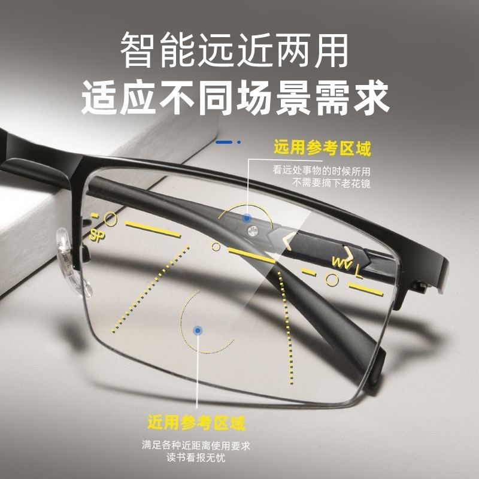
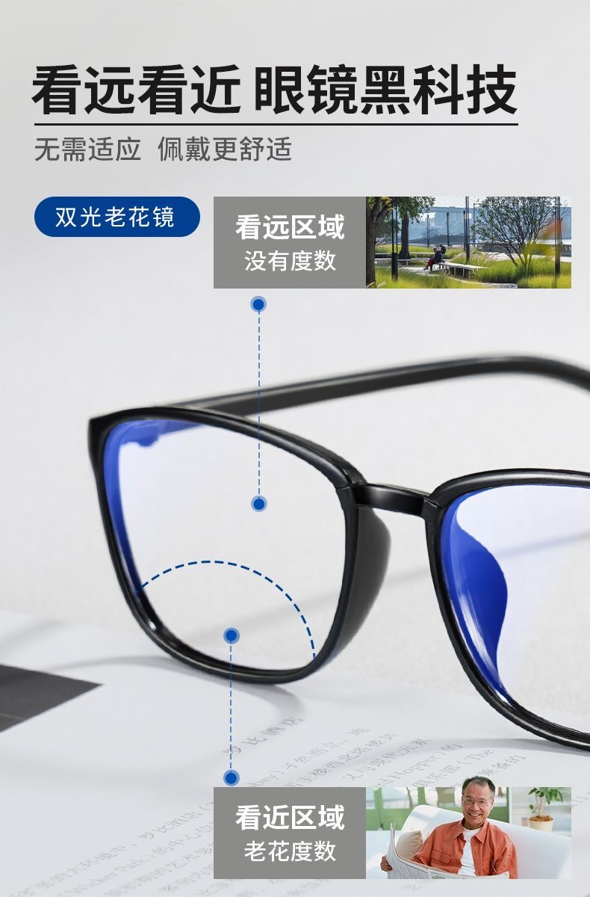

बहु-फोकस प्रोग्रेसिव लेंस का उपयोग करके मायोपिया को उलटना | मूल, AI द्वारा अनुवादित
प्रिस्क्रिप्शन
तारीख: 28 नवंबर, 2024
दृष्टि
- दृष्टि तीव्रता: 0.9
पपिलरी दूरी (PD)
- माप: 70 मिमी
दाहिने आँख (OD)
- मायोपिया: -4.25 D
- एस्टिग्मैटिज्म: -1.25 D
- एक्सिस: 171°
बाईं आँख (OS)
- मायोपिया: -2.50 D
- एस्टिग्मैटिज्म: -1.00 D
- एक्सिस: 2°
योजना
उद्देश्य: मल्टीफोकल प्रोग्रेसिव लेंस में ट्रांजिशन
- न्यूनतम प्रोग्रेसिव पावर: +0.75 D
नजदीकी दृष्टि प्रिस्क्रिप्शन
दाहिने आँख (OD)
- मायोपिया: -2.50 D
- एस्टिग्मैटिज्म: -1.25 D
- एक्सिस: 171°
बाईं आँख (OS)
- मायोपिया: -0.75 D
- एस्टिग्मैटिज्म: -1.00 D
- एक्सिस: 2°
- अतिरिक्त सुधार: +1.75 D मायोपिया में (एस्टिग्मैटिज्म अपरिवर्तित)
दूर दृष्टि प्रिस्क्रिप्शन
दाहिने आँख (OD)
- मायोपिया: -3.25 D
- एस्टिग्मैटिज्म: -1.25 D
- एक्सिस: 171°
बाईं आँख (OS)
- मायोपिया: -1.50 D
- एस्टिग्मैटिज्म: -1.00 D
- एक्सिस: 2°
- अतिरिक्त सुधार: +1.00 D मायोपिया में (एस्टिग्मैटिज्म अपरिवर्तित)
 स्रोत: pinduoduo.com
अभी-अभी प्राप्त और प्रयास किया
कुछ मिनटों के लिए मल्टीफोकल लेंस का उपयोग करने के बाद, मैंने उन्हें काफी अच्छे पाया। वे मेरे आवश्यकताओं को पूरी तरह से पूरा करते हैं और लगभग 130 CNY की लागत है।
मैंने ऊपर दिए गए डेटा का उपयोग करके एक जोड़ी मल्टीफोकल प्रोग्रेसिव लेंस कस्टमाइज किया। मैं मोबाइल फोन का उपयोग करने के लिए नजदीकी दृष्टि भाग का उपयोग कर सकता हूँ और कंप्यूटर पर काम करने के लिए दूर दृष्टि भाग का उपयोग कर सकता हूँ।
वास्तव में, आप लेंस को ऊपर या नीचे की ओर हिलाकर देखते हुए यह समायोजित कर सकते हैं कि आप नजदीकी या दूर दृष्टि के लिए किस भाग का उपयोग कर रहे हैं। जबकि छोटे समायोजन संभव हैं, बहुत अधिक समायोजित करना असामान्य या असुविधाजनक महसूस हो सकता है।
मैं उन्हें कुछ और दिनों तक उपयोग करूँगा ताकि देख सकूँ कि वे कैसे महसूस होते हैं।
जब मैंने चश्मा प्राप्त किया, तो मैंने लेंस पर पीले चिह्न देखे।
ग्राहक समर्थन कहता है:
लेंस पर पीले चिह्न आपकी रेफरेंस के लिए पेंट किए गए हैं। दूर देखने के लिए, ऊपर वाले वृत्त के माध्यम से देखें, और नजदीकी देखने के लिए, अपनी आँखों को थोड़ा नीचे करके नीचे वाले वृत्त के माध्यम से देखें। ये चिह्न मिटाए जा सकते हैं। दो दिनों के बाद अनुकूलन करने के बाद, आप लेंस के सामने स्पष्ट टेप लगाकर पीले लाइन को उतार सकते हैं। फिर, लेंस क्लीनर के साथ लेंस को साफ करें। आप इसे अल्कोहल और कोलोन के साथ भी साफ कर सकते हैं।
और SP और WV का मतलब निम्नलिखित है, Mistral के अनुसार:
मल्टीफोकल प्रोग्रेसिव लेंस के संदर्भ में, संक्षिप्त नाम “SP” और “WV” आमतौर पर लेंस के विशिष्ट मापों या विशेषताओं का संकेत देते हैं। यहाँ इसका मतलब आमतौर पर होता है:
SP (सेगमेंट हाइट या सेगमेंट पोजीशन): यह नजदीकी दृष्टि क्षेत्र (सेगमेंट) के ऑप्टिकल सेंटर की लंबवत स्थिति को नीचे के लेंस से दर्शाता है। यह सुनिश्चित करने के लिए महत्वपूर्ण है कि पहनने वाला नीचे देखने पर नजदीकी दूरी पर स्पष्ट रूप से देख सके।
WV (वर्किंग डिस्टेंस फॉर विजन): यह शब्द प्रोग्रेसिव लेंस में कम आमतौर पर उपयोग किया जाता है, लेकिन यह प्रभावी कार्य दूरी या प्रोग्रेसिव कॉरिडोर की लंबाई का संकेत दे सकता है, जो वह क्षेत्र है जहाँ पावर धीरे-धीरे दूर से नजदीकी दृष्टि में बदलता है।
ये मापन प्रोग्रेसिव लेंस को फिट करने के लिए महत्वपूर्ण हैं ताकि पहनने वाले के लिए सर्वोत्तम दृश्य आराम और प्रदर्शन सुनिश्चित हो। हमेशा एक आंख देखभाल पेशेवर से सबसे सटीक और व्यक्तिगत जानकारी के लिए परामर्श करें।
सुधार
अब, मैं एक जोड़ी मल्टीफोकल प्रोग्रेसिव लेंस पहनता हूँ। नजदीकी दृष्टि का अतिरिक्त सुधार +1.75 D मायोपिया में है (एस्टिग्मैटिज्म अपरिवर्तित)। दूर दृष्टि का अतिरिक्त सुधार +1.00 D मायोपिया में है (एस्टिग्मैटिज्म अपरिवर्तित)।
यह मेरे लिए कंप्यूटर को देखते समय दूर दृष्टि का उपयोग करना और कभी-कभी ऊपर देखना बिल्कुल सही है। कभी-कभी, मैं मोबाइल फोन का उपयोग करने, पत्रों या किताबों को पढ़ने के लिए नजदीकी दृष्टि का उपयोग करता हूँ।
हालाँकि, मैं अपने चश्मे का उपयोग करने का तरीका अभी भी सुधार सकता हूँ। कभी-कभी, कार चलाते समय बहुत सारे लाल लाइट होते हैं। हरी लाइटों का इंतजार करते समय, मैं डिग्री के साथ नाइट विजन ग्लासेस का उपयोग करता हूँ जो मेरे प्रिस्क्रिप्शन के साथ बिल्कुल मिलते हैं। मुझे लगा कि समाधान एक नया जोड़ा मल्टीफोकल प्रोग्रेसिव लेंस प्राप्त करना हो सकता है। नजदीकी दृष्टि का अतिरिक्त सुधार +1.75 D मायोपिया में रहेगा (एस्टिग्मैटिज्म अपरिवर्तित), और दूर दृष्टि का अतिरिक्त सुधार +0.25 D मायोपिया में कम हो जाएगा (एस्टिग्मैटिज्म अपरिवर्तित)।
मेरे नाइट मल्टीफोकल प्रोग्रेसिव लेंस की नजदीकी दृष्टि मेरी सामान्य मल्टीफोकल लेंस की तरह ही है। हालाँकि, दूर दृष्टि के लिए, मैं इसे मेरे प्रिस्क्रिप्शन के करीब रखना चाहता हूँ ताकि दूर दृष्टि भाग का उपयोग करते समय दृश्य तीव्रता 0.8 या 0.9 बनाए रख सकूँ।
छात्रों के लिए, यह सबसे अच्छा समाधान है। उन्हें अभी भी अक्सर ब्लैकबोर्ड को देखना पड़ता है और वे एक डेस्क पर बैठे होते हैं। इसलिए जब वे नीचे देखते हैं, तो वे ज्यादातर डेस्क पर अपने होमवर्क और पढ़ने के सामग्री को देखते हैं। जब वे ऊपर देखते हैं, तो वे ज्यादातर ब्लैकबोर्ड या शिक्षक को देखते हैं।
प्रेस्कोपिया लेंस
प्रेस्कोपिया लेंस के मामले को ही विचार करें। जैसे-जैसे लोग बूढ़े होते हैं, उनकी आँख की मांसपेशियाँ मायोपिया के विपरीत दिशा में आकार बदलती हैं।
नीचे का चित्र इसे अच्छी तरह से दर्शाता है। हम प्रेस्कोपिया लेंस में उपयोग की जाने वाली सिद्धांत को मायोपिया लेंस में लागू कर सकते हैं।
 स्रोत: pinduoduo.com
छह महीने बाद उनका उपयोग करने के बाद
अधिकांश समय, मैं मल्टीफोकल प्रोग्रेसिव लेंस के मध्य या ऊपरी भाग का उपयोग करता हूँ, जो चीजों को जटिल बनाता है। मैंने एक बार फिर से सिंगल-विजन लेंस का उपयोग करने का रुख किया है।